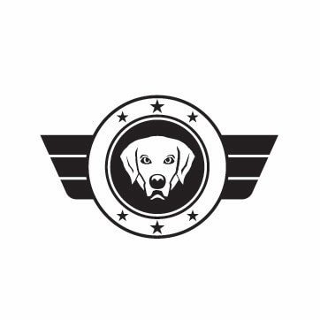
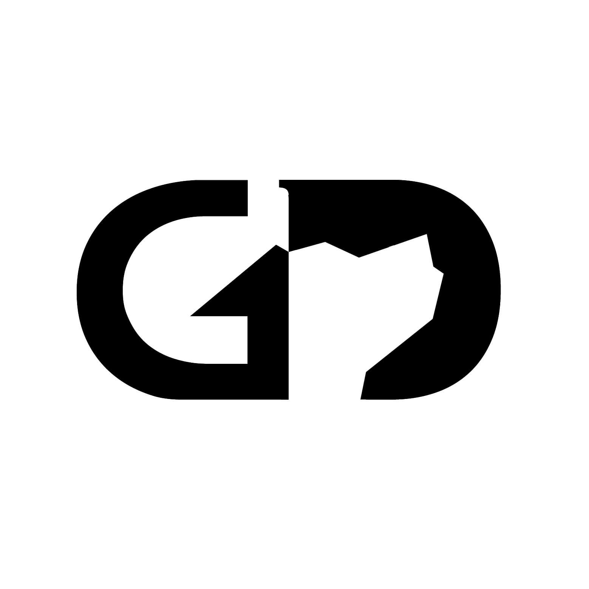
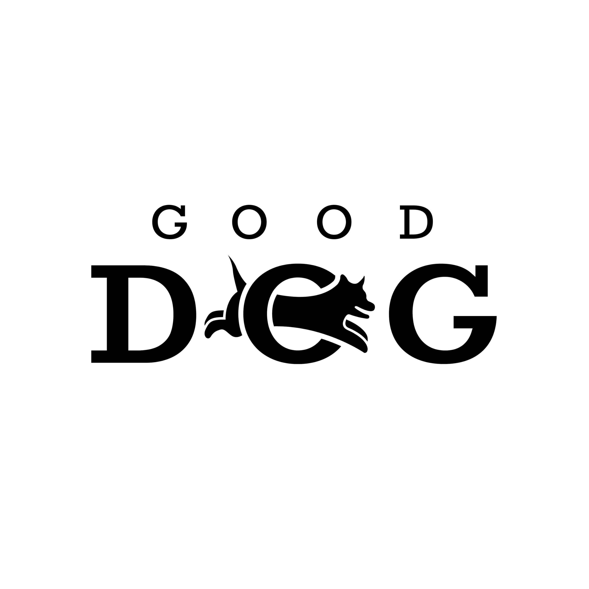
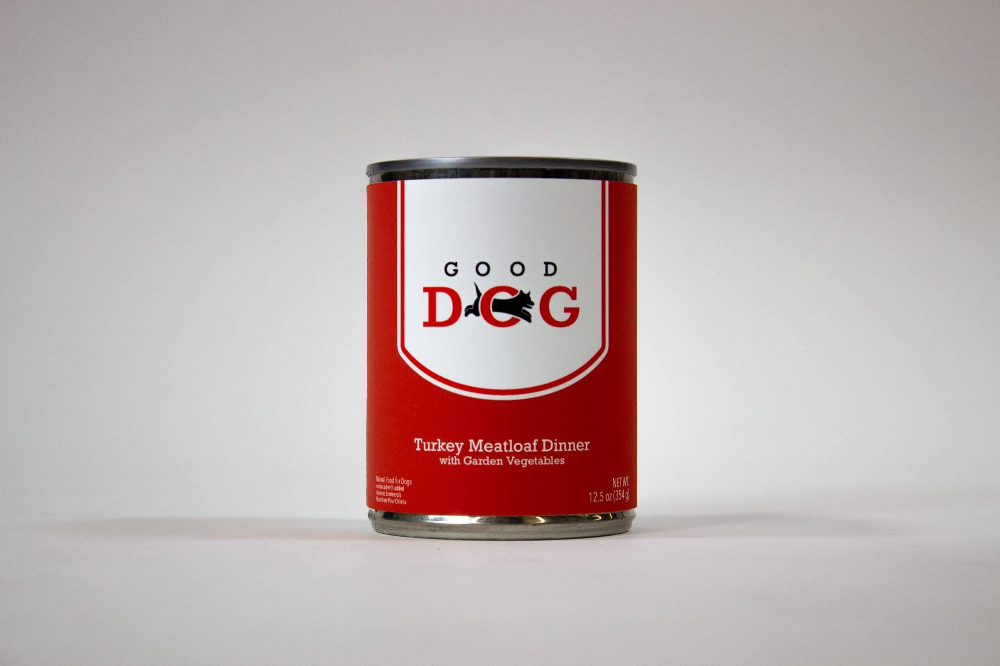
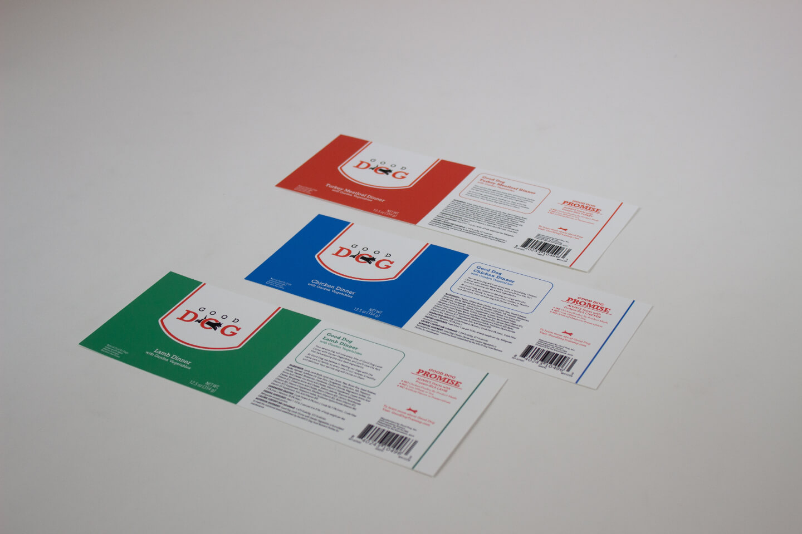

For this project, I was assigned the name of a fictional company. I had to develop a unique brand
identity for the company, develop four different logos, and apply one of them to a design.
I envisioned Good Dog as a dog training company dedicated to training service dogs.

Pictorial Logo
I went with a military direction for this logo. I was inspired by army patches and
uniform
designs.

Typographic Logo
I designed this logo to be in the shape of a dog tag to continue the military theme
of the
Pictorial Logo. I carefully tweaked the letterforms to create a dog in the negative space.
Abstract Logo
This logo incorporates the feeling of connection and bonding through the
intertwining ovals,
while evoking a picture of a dog. The soft curves of the logo give it a friendly,
approachable
feel.

Combination Logo
The dog jumping through the O is friendly and inviting. The slab serif typeface
gives it an
authoritative feel.

Good Dog Branded Dog Food
Front of Good Dog Dog Food Packaging
I designed a series of labels for a limited run of “Good Dog” branded dog food that would help
spread awareness of the brand. I carefully considered the FDA guidelines for packaging design as
well as how the product would look on store shelves when crafting the design.

Labels for other flavors of Good Dog branded dog food